Inhalt Index DeskTop Bronstein

 Computeralgebrasysteme Anwendungen von Computeralgebrasystemen Elemente der linearen Algebra Mathematica
Computeralgebrasysteme Anwendungen von Computeralgebrasystemen Elemente der linearen Algebra Mathematica


Mit den Anweisungen 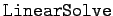 und 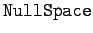 lassen sich alle im Kapitel Lineare Algebra, Abschnitt Lösung linearer Gleichungssysteme beschriebenen Fälle behandeln, d.h., es läßt sich festzustellen, ob prinzipiell eine Lösung existiert, und wenn ja, dann wird diese ermittelt. Im Folgenden werden einige Beispiele aus dem Abschnitt Lösung linearer Gleichungssysteme betrachtet.
| Beispiel A |
|
Das Beispiel im Abschnitt Triviale Lösung und Fundamentalsystem 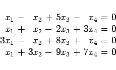
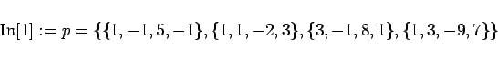
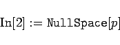
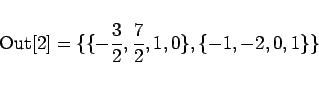
|
| Beispiel B |
|
Man erzeugt gemäß Beispiel A aus Abschnitt Allgemeine Regel für das inhomogene System 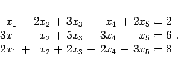
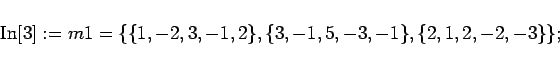
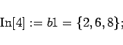
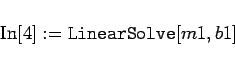
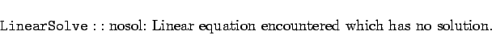
|
| Beispiel C |
|
Gemäß Beispiel B aus Abschnitt Allgemeine Regel für das inhomogene System 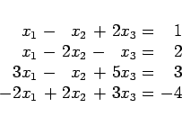
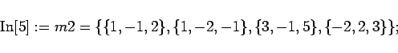
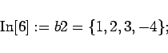
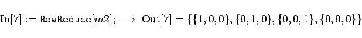
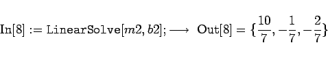
|